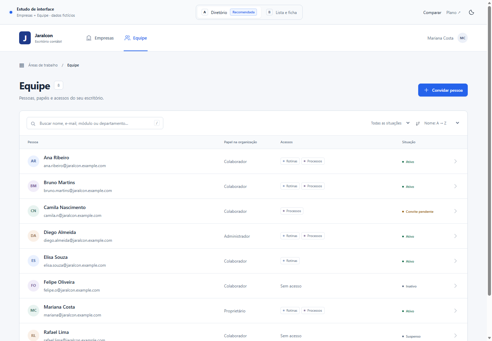
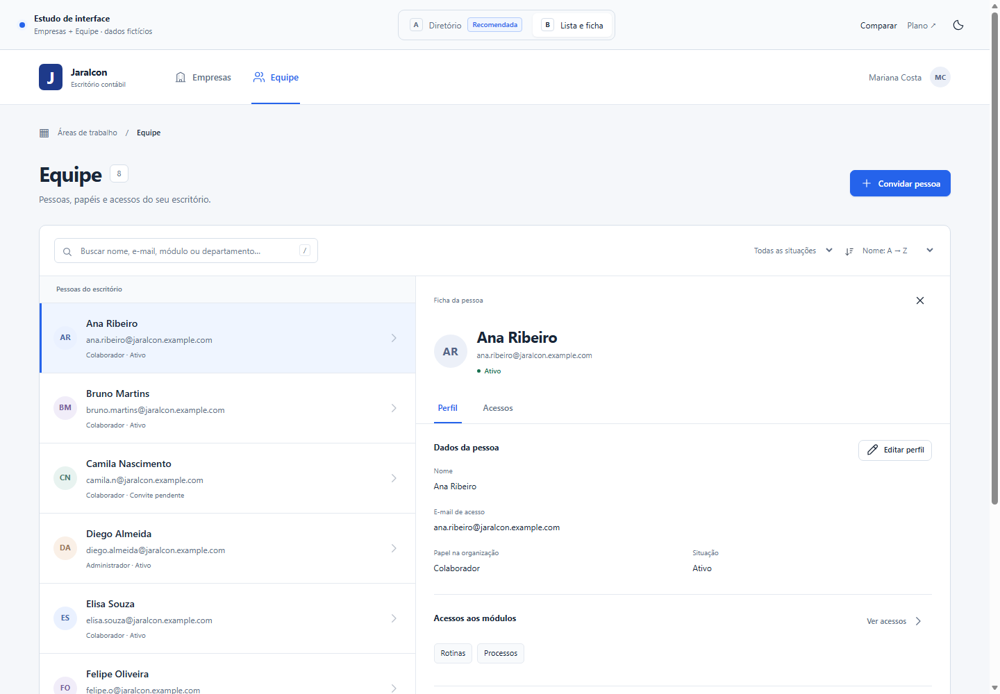
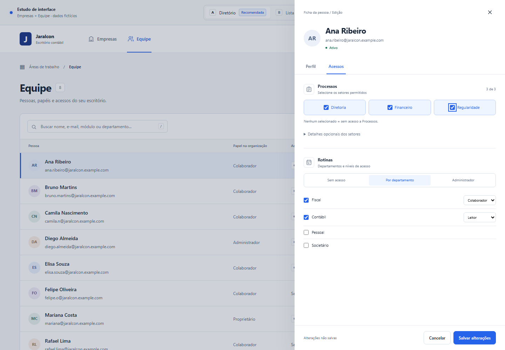
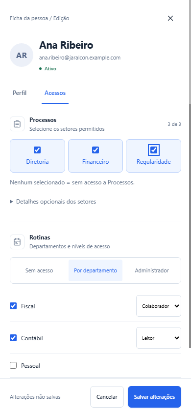

Duas propostas · Uma estrutura comum
Mais clareza para encontrar.
Empresas e Equipe passam a falar a mesma linguagem. Compare a consulta
em tabela com a ficha permanente e explore os mesmos fluxos nas duas
opções.
Uma ação principal por tela
Consulta antes da edição
Busca e contexto preservados
Acessos por seleção direta
A
Diretório e ficha lateral
Recomendada
A lista aproveita toda a largura. A ficha aparece quando você
precisa consultar ou editar um registro.
Empresas · leitura comparável entre registros

Equipe · pessoa, papel e situação bem separados
Para localizar e comparar. Mantém mais colunas
visíveis. A ficha fica sobre parte da lista durante a consulta.
B
Lista e ficha fixa
Alternativa
Lista compacta à esquerda, ficha ao lado. A pessoa ou empresa
selecionada continua em evidência.
Empresas · contexto e cadastro lado a lado

Equipe · alternância rápida entre pessoas
Para revisar em sequência. A ficha permanece
aberta. A lista mostra menos dados e precisa de mais largura
disponível.
A mesma melhoria nas duas opções
Selecione onde a pessoa trabalha
Em Processos, escolha os setores permitidos. Os cargos descritivos
ficam em detalhes opcionais. Em Rotinas, selecione os
departamentos e ajuste o nível de cada um.
Explorar acessos ↗

No computador · setores e departamentos em uma única ficha

No celular · uma coluna, os mesmos controles
Setores com seleção direta
Sem um dropdown de acesso para cada setor. Nenhum marcado
significa sem acesso a Processos.
Cargo fica opcional
Texto descritivo separado da permissão. Só aparece quando você
abre os detalhes.
Revisão antes de salvar
Alterações ficam no editor até a confirmação. Cancelar preserva o
cadastro anterior.
Referências do estudo
Padrões de produtos reais, adaptados ao trabalho do escritório.